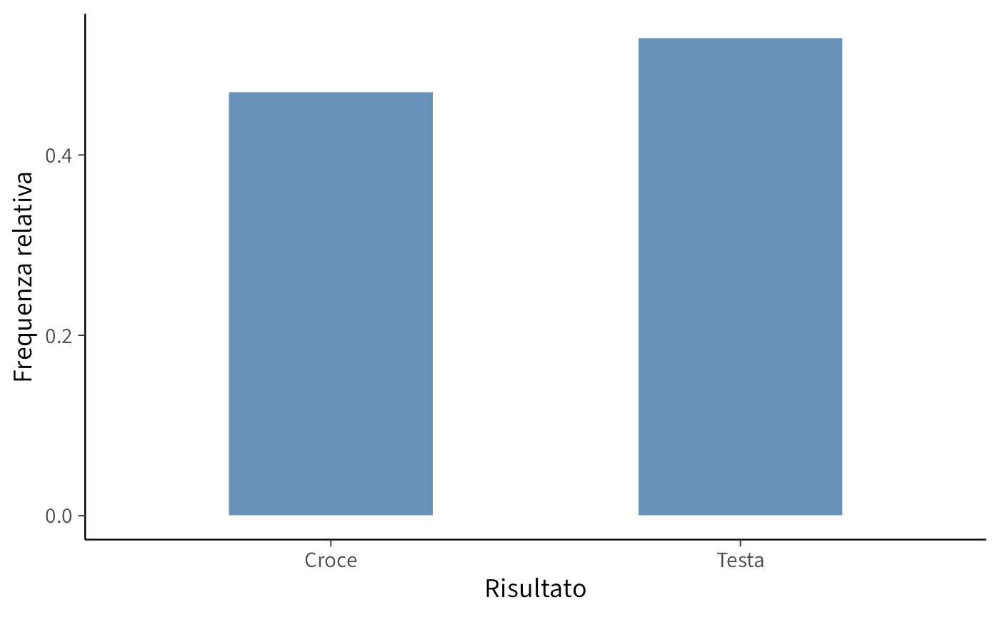
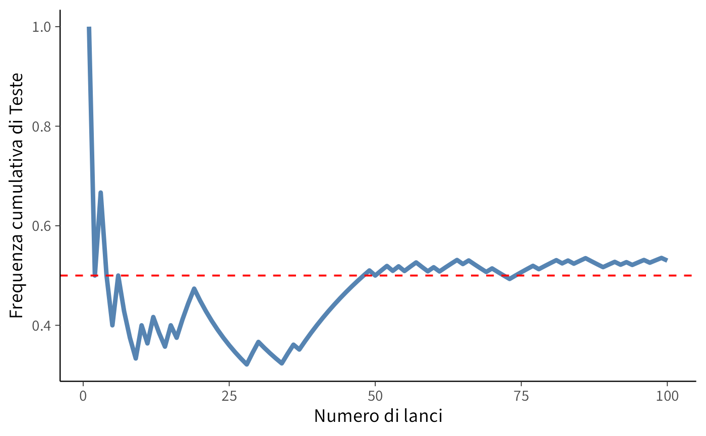

here::here("code", "_common.R") |>
source()
# Load packages
if (!requireNamespace("pacman")) install.packages("pacman")
pacman::p_load(readr, VennDiagram)2 Modelli probabilistici
Introduzione
Dopo aver esaminato il significato filosofico della probabilità nel Capitolo 1, questo capitolo ne sviluppa una trattazione più formale, creando un collegamento tra la riflessione teorica e gli strumenti operativi. Partendo dalla definizione di esperimento casuale – come il lancio di una moneta o la somministrazione di un test psicologico – costruiremo un framework matematico per analizzare e quantificare le proprietà di tali esperimenti. In particolare, approfondiremo i concetti di spazio campionario, eventi e proprietà della probabilità, fornendo le basi per un’interpretazione rigorosa dei fenomeni complessi in psicologia e nelle scienze sociali.
Panoramica del capitolo
- Nozioni di spazio campionario, eventi e operazioni su eventi.
- Definizione di probabilità.
- Spazi discreti o continui.
- Teorema della somma.
2.1 Esperimenti casuali
Il concetto fondamentale della probabilità è l’esperimento casuale, ovvero un procedimento il cui esito non può essere previsto con certezza, ma che può essere analizzato quantitativamente. Alcuni esempi di esperimenti casuali includono: lanciare un dado e osservare il numero ottenuto sulla faccia superiore; estrarre una carta a caso da un mazzo e registrarne il seme e il valore; misurare il livello di stress percepito da un gruppo di individui in un determinato contesto, come durante un esame o un evento stressante; contare il numero di risposte corrette fornite dai partecipanti a un test di memoria entro un tempo prestabilito; eccetera.
L’analisi probabilistica ha lo scopo di comprendere il comportamento di esperimenti casuali mediante la costruzione di modelli matematici. Una volta formalizzato matematicamente un esperimento casuale, è possibile calcolare grandezze di interesse, quali probabilità e valori attesi. Tali modelli possono essere implementati su calcolatore per simulare l’esperimento e analizzarne i risultati. Inoltre, la modellizzazione matematica degli esperimenti casuali costituisce il fondamento della statistica, disciplina che consente di confrontare vari modelli e di individuare quello più adeguato ai dati osservati.
2.1.1 Il lancio di una moneta
Uno degli esperimenti casuali più semplici e fondamentali è il lancio ripetuto di una moneta. Questo esperimento elementare permette di illustrare molti concetti chiave della teoria della probabilità. Per studiarne il comportamento, possiamo simularlo al computer utilizzando il linguaggio R.
Di seguito, uno script in R simula 100 lanci di una moneta equa (con probabilità uguali di ottenere “testa” o “croce”) e rappresenta graficamente la distribuzione dei risultati mediante un diagramma a barre.
set.seed(123) # Imposta il seed per garantire la riproducibilità
x <- runif(100) < 0.5 # Genera 100 numeri casuali e verifica se sono minori di 0.5
x
#> [1] TRUE FALSE TRUE FALSE FALSE TRUE FALSE FALSE FALSE TRUE FALSE TRUE
#> [13] FALSE FALSE TRUE FALSE TRUE TRUE TRUE FALSE FALSE FALSE FALSE FALSE
#> [25] FALSE FALSE FALSE FALSE TRUE TRUE FALSE FALSE FALSE FALSE TRUE TRUE
#> [37] FALSE TRUE TRUE TRUE TRUE TRUE TRUE TRUE TRUE TRUE TRUE TRUE
#> [49] TRUE FALSE TRUE TRUE FALSE TRUE FALSE TRUE TRUE FALSE FALSE TRUE
#> [61] FALSE TRUE TRUE TRUE FALSE TRUE FALSE FALSE FALSE TRUE FALSE FALSE
#> [73] FALSE TRUE TRUE TRUE TRUE FALSE TRUE TRUE TRUE FALSE TRUE FALSE
#> [85] TRUE TRUE FALSE FALSE FALSE TRUE TRUE FALSE TRUE FALSE TRUE TRUE
#> [97] FALSE TRUE TRUE FALSENel codice, la funzione runif genera 100 numeri casuali distribuiti uniformemente nell’intervallo [0, 1]. Confrontando ciascun numero con 0.5, si ottiene un vettore logico che rappresenta il risultato di ogni lancio: Testa (TRUE) o Croce (FALSE).
Il grafico a barre mostra la distribuzione osservata degli esiti.
# Creazione del grafico a barre della distribuzione dei risultati
dat |>
ggplot(aes(x = Risultato)) +
geom_bar(aes(y = after_stat(prop), group = 1), width = 0.5) +
labs(
x = "Risultato",
y = "Frequenza relativa"
)
Un aspetto rilevante di questo esperimento è l’andamento della proporzione osservata di esiti “Testa” in funzione del numero di lanci. Il grafico seguente illustra l’andamento della media cumulativa degli esiti “Testa”, che, in accordo con la legge dei grandi numeri, dovrebbe convergere al valore teorico di 0.5.
y <- cumsum(x) / t # Calcola la media cumulativa delle Teste
# Creazione del dataframe per il grafico della media mobile
data_mean <- tibble(
Lancio = t,
Media_Testa = y
)
# Creazione del grafico della media cumulativa
data_mean |>
ggplot(
aes(x = Lancio, y = Media_Testa)
) +
geom_line(linewidth = 1.5) +
geom_hline(yintercept = 0.5, linetype = "dashed", color = "red") +
labs(
x = "Numero di lanci",
y = "Frequenza cumulativa di Teste"
)
Il grafico mostra come la media delle Teste oscilla inizialmente a causa della variabilità intrinseca dell’esperimento, ma tende progressivamente a stabilizzarsi intorno a 0.5. Questo fenomeno è un esempio della legge dei grandi numeri, secondo cui, ripetendo un esperimento casuale un numero sempre maggiore di volte, la frequenza relativa di un evento si avvicina alla sua probabilità teorica.
2.1.2 Domande di interesse
L’esperimento casuale del lancio di una moneta porta a numerose domande, tra cui:
- Qual è la probabilità di ottenere un certo numero \(x\) di teste in 100 lanci?
- Qual è il numero atteso di teste in un esperimento di 100 lanci?
Dal punto di vista statistico, quando osserviamo i risultati di un esperimento reale (ad esempio, 100 lanci di una moneta), possiamo anche porci domande come:
- La moneta è davvero equa o è sbilanciata?
- Qual è il miglior metodo per stimare la probabilità \(p\) di ottenere “testa” dalla sequenza osservata di lanci?
- Quanto è precisa la stima ottenuta e con quale livello di incertezza?
Questi interrogativi costituiscono la base della statistica inferenziale, che permette di testare ipotesi sulla probabilità di un evento e stimare parametri sconosciuti sulla base di dati osservati.
2.1.3 Modellizzazione
La descrizione matematica di un esperimento casuale si basa su tre elementi fondamentali:
Lo spazio campionario: rappresenta l’insieme di tutti i possibili esiti dell’esperimento. Nel caso di esperimenti semplici, lo spazio campionario è immediato da individuare, mentre in situazioni più complesse è necessario applicare i principi del calcolo combinatorio.
Gli eventi: sono sottoinsiemi dello spazio campionario e rappresentano gli esiti di interesse. Per analizzare e manipolare gli eventi, utilizziamo gli strumenti della teoria degli insiemi.
La probabilità: assegna un valore numerico a ciascun evento, indicando la sua probabilità di verificarsi. L’assegnazione delle probabilità avviene secondo gli assiomi di Kolmogorov.
Nei paragrafi seguenti, analizzeremo ciascuna di queste componenti in dettaglio.
2.2 Spazio campionario
Anche se non è possibile prevedere con esattezza l’esito di un singolo esperimento casuale, è comunque possibile definire tutti i risultati che potrebbero verificarsi. L’insieme completo di questi esiti possibili si chiama “spazio campionario”.
Definizione 2.1 Lo spazio campionario \(\Omega\) di un esperimento casuale è l’insieme di tutti i possibili esiti dell’esperimento.
2.2.1 Esempi di spazi campionari
Consideriamo lo spazio campionario di alcuni esperimenti casuali.
Lancio di due dadi consecutivi: \[ \Omega = \{(1,1), (1,2), \dots, (6,6)\}. \]
Tempo di reazione a uno stimolo visivo: \[\Omega = \mathbb{R}^+,\] ovvero l’insieme dei numeri reali positivi.
Numero di errori in un test di memoria a breve termine: \[\Omega = \{0, 1, 2, \dots\}.\]
Misurazione delle altezze di dieci persone: \[\Omega = \{(x_1, \dots, x_{10}) : x_i \ge 0, \; i=1,\dots,10\} \subset \mathbb{R}^{10}.\]
2.3 Eventi
Solitamente, però, non siamo interessati a un singolo esito, ma a un insieme di essi. Un evento è un sottoinsieme dello spazio campionario a cui possiamo assegnare una probabilità.
Definizione 2.2 Un evento è un sottoinsieme \(A \subseteq \Omega\) al quale viene assegnata una probabilità. Gli eventi sono indicati con lettere maiuscole: \(A, B, C, \dots\). Diciamo che l’evento \(A\) si verifica se l’esito dell’esperimento appartiene a \(A\).
2.3.1 Esempi di eventi
Consideriamo alcuni possibili eventi definiti sugli spazi campionari descritti sopra.
Lancio di due dadi consecutivi.
Evento: “La somma dei due dadi è uguale a 7”
\[ A = \{(1,6), (2,5), (3,4), (4,3), (5,2), (6,1)\}. \]Tempo di reazione a uno stimolo visivo.
Evento: “Il tempo di reazione è inferiore a 2 secondi”
\[ A = [0, 2). \]Numero di errori in un test di memoria a breve termine.
Evento: “Il numero di errori è al massimo 3”
\[ A = \{0, 1, 2, 3\}. \]Misurazione delle altezze di dieci persone.
Evento: “Almeno due persone hanno un’altezza superiore a 180 cm”
\[ A = \{(x_1, \dots, x_{10}) : \text{almeno due } x_i > 180\}. \]
Questi esempi mostrano come gli eventi possano essere definiti in modo diverso a seconda della natura dello spazio campionario e del contesto di interesse.
2.4 Operazioni sugli eventi
Poiché gli eventi sono definiti come insiemi, possiamo applicare loro le classiche operazioni insiemistiche.
Unione (\(\cup\)). L’unione di due eventi \(A\) e \(B\) è l’insieme di tutti gli esiti che appartengono almeno a uno dei due eventi: \[ A \cup B = \{\omega \in \Omega : \omega \in A \text{ oppure } \omega \in B\}. \]
Intersezione (\(\cap\)). L’intersezione di due eventi è l’insieme degli esiti comuni: \[ A \cap B = \{\omega \in \Omega : \omega \in A \text{ e } \omega \in B\}. \]
Complemento (\(A^c\)). Il complemento di un evento \(A\) è l’insieme di tutti gli esiti che non appartengono ad \(A\): \[ A^c = \{\omega \in \Omega : \omega \notin A\}. \]
Eventi mutuamente esclusivi. Due eventi sono mutuamente esclusivi se non hanno esiti in comune, ovvero: \[ A \cap B = \emptyset. \]
2.4.1 Proprietà fondamentali delle operazioni su eventi
Idempotenza: \[ A \cup A = A, \quad A \cap A = A. \]
Leggi di De Morgan: \[ (A \cup B)^c = A^c \cap B^c, \quad (A \cap B)^c = A^c \cup B^c. \]
Unione e Intersezione con l’insieme vuoto: \[ A \cup \emptyset = A, \quad A \cap \emptyset = \emptyset. \]
Unione e Intersezione con lo spazio campionario: \[ A \cup \Omega = \Omega, \quad A \cap \Omega = A. \]
Queste operazioni forniscono le basi per costruire e manipolare eventi in contesti probabilistici, consentendo di calcolare le probabilità e di prendere decisioni basate sull’analisi degli esiti possibili.
2.5 Probabilità
Il terzo elemento fondamentale del modello probabilistico è la funzione di probabilità, che quantifica numericamente la possibilità di occorrenza degli eventi.
Definizione 2.3 Una probabilità \(P\) è una funzione \(P: \mathcal{F} \to [0,1]\) definita su una \(\sigma\)-algebra \(\mathcal{F}\) di sottoinsiemi di \(\Omega\)1, che soddisfa i seguenti assiomi di Kolmogorov:
Non-negatività: per ogni evento \(A \in \mathcal{F}\),
\[ P(A) \geq 0. \]Normalizzazione: la probabilità dell’evento certo è
\[ P(\Omega) = 1. \]Additività numerabile: per ogni successione di eventi \(A_1, A_2, \dots \in \mathcal{F}\) a due a due disgiunti (cioè \(A_i \cap A_j = \emptyset\) per \(i \neq j\)),
\[ P\left( \bigcup_{i=1}^{\infty} A_i \right) = \sum_{i=1}^{\infty} P(A_i). \]
In altri termini, una misura di probabilità assegna a ogni evento un valore nell’intervallo \([0,1]\), garantendo che l’evento certo abbia probabilità 1 e che la probabilità dell’unione di eventi incompatibili sia uguale alla somma delle loro probabilità. Questi assiomi forniscono le fondamenta formali per una teoria della probabilità coerente e intuitivamente plausibile.
2.5.1 Interpretazione degli assiomi di Kolmogorov
Assioma 1 (Non-negatività e limiti 0–1)
La probabilità di qualsiasi evento è un numero reale non negativo e non superiore a 1. Un evento con probabilità 0 è considerato praticamente impossibile, mentre un evento con probabilità 1 è certo.
Esempio: nel lancio di un dado equilibrato a sei facce, l’evento “esce il numero 7” ha probabilità 0, mentre l’evento “esce un numero compreso tra 1 e 6” ha probabilità 1.Assioma 2 (Evento certo)
La probabilità dell’intero spazio campionario \(\Omega\) è pari a 1, il che riflette il fatto che in ogni realizzazione dell’esperimento si verifica necessariamente uno degli esiti possibili.
Esempio: nel lancio di un dado, lo spazio campionario \(\Omega\) è \(\{1,2,3,4,5,6\}\). L’evento “esce un numero appartenente a \(\Omega\)” è certo, quindi \(P(\Omega) = 1\).Assioma 3 (Additività per eventi incompatibili)
Se una sequenza di eventi \(A_1, A_2, \dots\) è disgiunta due a due (cioè se \(A_i \cap A_j = \emptyset\) per ogni coppia di indici \(i, j\) con \(i \neq j\)), allora la probabilità della loro unione è uguale alla somma delle probabilità dei singoli eventi. Esempio: nel lancio di un dado, gli eventi “esce 2” e “esce 5” sono incompatibili. Pertanto,
\[ P(\text{“pari”} \cup \text{“dispari”}) \;=\; P(\text{“pari”}) + P(\text{“dispari”})\,. \]
Questi assiomi garantiscono che la funzione di probabilità sia matematicamente coerente e rispecchi l’intuizione empirica: i valori negativi sono esclusi, la certezza è normalizzata a 1 e il comportamento della probabilità rispetto all’unione di eventi disgiunti è additivo.
2.5.2 Proprietà fondamentali
Dagli assiomi di Kolmogorov derivano alcune proprietà fondamentali che descrivono il comportamento della probabilità in varie situazioni. Le principali sono elencate di seguito.
Teorema 2.1 (Proprietà fondamentali della misura di probabilità) Siano \(A\) e \(B\) due eventi qualsiasi appartenenti a una \(\sigma\)-algebra \(\mathcal{F}\) definita sullo spazio campionario \(\Omega\). Valgono le seguenti proprietà:
Probabilità dell’evento impossibile
\[ P(\emptyset) = 0. \] L’insieme vuoto, che rappresenta l’assenza di esiti favorevoli, costituisce un evento con probabilità nulla.Monotonicità della probabilità
\[ A \subseteq B \quad \Longrightarrow \quad P(A) \leq P(B). \] Se un evento è interamente contenuto in un altro, la sua probabilità non può essere maggiore di quella dell’evento che lo comprende.Probabilità dell’evento complementare
\[ P(A^c) = 1 - P(A). \] Poiché \(A\) e il suo complementare \(A^c\) coprono l’intero spazio \(\Omega\), la probabilità di \(A^c\) è la parte “rimanente” fino a 1.Principio di inclusione-esclusione per due eventi
\[ P(A \cup B) = P(A) + P(B) - P(A \cap B). \] Per calcolare la probabilità dell’unione di due eventi qualsiasi, si sommano le probabilità di ciascun evento e si sottrae la probabilità della loro intersezione, altrimenti verrebbe conteggiata due volte.
2.6 Spazi discreti e continui
La natura dello spazio campionario determina come definiamo e calcoliamo le probabilità. Distinguiamo i due casi fondamentali: lo spazio campionario discreto
\[ \Omega = \{a_1, a_2, \dots, a_n\} \quad \text{oppure} \quad \Omega = \{a_1, a_2, \dots\} \] e lo spazio campionario continuo
\[ \Omega = \mathbb{R} . \]
2.6.1 Spazi campionari discreti
Definizione:
Uno spazio campionario si dice discreto quando l’insieme dei possibili esiti è finito o numerabile (ovvero, i suoi elementi possono essere posti in corrispondenza biunivoca con i numeri naturali).
Caratteristiche:
- gli esiti sono isolabili e distinti;
- la probabilità è completamente determinata dall’assegnazione di pesi non negativi a ciascun esito elementare.
Esempi:
- lancio di un dado: \(\Omega = \{1, 2, 3, 4, 5, 6\}\) (finito);
- numero di decadimenti radioattivi in un intervallo temporale: \(\Omega = {0, 1, 2, \dots}\) (numerabile).
Assegnazione della probabilità:
A ogni esito \(\omega_i\) viene associato un valore \(p_i \geq 0\), detto probabilità elementare, tale che:
\[ \sum_{i} p_i = 1. \]
Questa condizione garantisce la normalizzazione della misura di probabilità.La probabilità di un qualsiasi evento \(A \subseteq \Omega\) è data da:
\[ P(A) = \sum_{\omega_i \in A} p_i. \]
In altri termini, \(P(A)\) corrisponde alla somma delle probabilità di tutti gli esiti elementari contenuti in \(A\).
Questa costruzione assicura che la funzione \(P\) soddisfi gli assiomi di Kolmogorov e definisca pertanto una misura di probabilità sullo spazio discreto.
2.6.2 Spazi campionari continui
Definizione:
Uno spazio campionario si dice continuo quando l’insieme dei possibili esiti è non numerabile e forma tipicamente un intervallo o un’unione di intervalli sulla retta reale. In tali spazi, la probabilità associata a singoli punti è infinitesimale e la probabilità viene definita tramite densità.
Caratteristiche:
- gli esiti non sono isolabili, ma costituiscono un insieme continuo (ad esempio, un intervallo);
- la probabilità di un singolo punto è zero; ha significato probabilistico solo parlare di probabilità su insiemi di misura non nulla (come intervalli).
Esempi:
- tempo di attesa per l’arrivo di un autobus: \(\Omega = [0, \infty)\);
- altezza di un individuo adulto: \(\Omega = [50, 250]\) (in cm, ottenuta con uno strumento infinitamente preciso).
Assegnazione della probabilità:
La probabilità è descritta da una funzione di densità di probabilità (PDF) \(f(x) \geq 0\), che deve soddisfare la condizione di normalizzazione:
\[ \int_{-\infty}^{\infty} f(x)\, dx = 1. \]
Questa condizione garantisce che la probabilità totale su tutto lo spazio campionario sia unitaria.La probabilità di un evento \(A \subseteq \Omega\) (ad esempio, un intervallo) si calcola integrando la densità su \(A\):
\[ P(A) = \int_{A} f(x)\, dx. \]
In particolare, se \(A = [a, b]\), allora:
\[ P(a \leq X \leq b) = \int_{a}^{b} f(x)\, dx. \]
Questa costruzione garantisce che la funzione \(P\) sia coerente con gli assiomi di Kolmogorov, fornendo una base rigorosa per la modellizzazione probabilistica di fenomeni continui.
2.6.4 Confronto chiave
| Caratteristica | Spazio Discreto | Spazio Continuo |
|---|---|---|
| Esiti | Numerabili (es: 1, 2, 3) | Non numerabili (es: intervalli) |
| Probabilità di un singolo punto | \(P(\{\omega_i\}) = p_i\) (\(\geq\) 0) | \(P(\{x\}) = 0\) (sempre zero) |
| Strumento matematico | Somma \(\sum\) | Integrale \(\int\) |
| Esempi comuni | Dadi, monete, conteggi | Misure fisiche, tempi, temperature |
2.6.5 Dai concetti base alle proprietà fondamentali della probabilità
Abbiamo visto come un esperimento casuale possa essere formalizzato matematicamente attraverso tre elementi chiave:
- Spazio campionario (\(\Omega\)): l’insieme di tutti i possibili esiti dell’esperimento.
- Eventi: sottoinsiemi di \(\Omega\) che rappresentano combinazioni di esiti di interesse.
- Probabilità: una funzione \(P\) che assegna a ogni evento un valore numerico compreso tra 0 e 1, misurandone il grado di verosimiglianza.
A partire da queste definizioni, è possibile derivare proprietà essenziali per il calcolo e l’analisi probabilistica. Queste proprietà permettono di calcolare la probabilità di eventi complessi a partire da eventi elementari e di stabilire relazioni logiche tra di essi.
In questo corso, approfondiremo quattro teoremi fondamentali:
- teorema della somma;
- teorema del prodotto;
- teorema della probabilità totale;
- teorema di Bayes.
L’introduzione di operazioni sugli eventi (unione, intersezione, complemento) e delle proprietà della probabilità (teorema della somma, probabilità condizionata, teorema della probabilità totale, …) ci permette di costruire modelli probabilistici più complessi e applicabili a problemi reali.
Qui di seguito, approfondiamo il teorema della somma.
2.7 Teorema della somma
Il teorema della somma (o regola additiva) permette di determinare la probabilità che si verifichi almeno uno tra due eventi \(A\) e \(B\). La sua formulazione dipende dalla relazione tra i due eventi:
Caso 1: eventi mutuamente esclusivi. Se \(A\) e \(B\) non possono verificarsi insieme (ossia \(A \cap B = \emptyset\)), la probabilità dell’unione è data dalla somma delle singole probabilità:
\[ P(A \cup B) = P(A) + P(B). \tag{2.1}\]
Caso 2: eventi non esclusivi. Se \(A\) e \(B\) possono coesistere, è necessario evitare di contare due volte la loro intersezione:
\[ P(A \cup B) = P(A) + P(B) - P(A \cap B). \tag{2.2}\]
Perché questa differenza?
La probabilità è una funzione d’insieme coerente con le operazioni insiemistiche. L’addizione diretta \(P(A) + P(B)\) conteggia due volte gli esiti comuni a \(A\) e \(B\) (rappresentati da \(A \cap B\)). La sottrazione di \(P(A \cap B)\) garantisce che ogni esito sia considerato una sola volta.
Il teorema della somma mette in luce come le operazioni logiche tra eventi (unione e intersezione) si traducano in relazioni algebriche tra le loro probabilità, offrendo uno strumento operativo per la modellazione di scenari reali.
2.8 Probabilità, calcolo combinatorio e simulazioni
In numerosi contesti probabilistici, specialmente in ambito introduttivo, si adotta l’ipotesi di equiprobabilità degli eventi elementari. In tal caso, la probabilità di un evento \(A\) si riduce al rapporto tra il numero di casi favorevoli e il numero di casi possibili:
\[ P(A) = \frac{\#A}{\#\Omega}. \]
In questo contesto, il calcolo combinatorio fornisce gli strumenti formali per elencare in modo efficiente le configurazioni rilevanti. Il procedimento generale prevede:
-
Identificazione dei casi favorevoli: determinare tutte le configurazioni che realizzano l’evento di interesse.
- Conteggio sistematico: calcolare il numero di casi favorevoli e il numero totale di esiti possibili, applicando le tecniche combinatorie appropriate (disposizioni, permutazioni, combinazioni, ecc.).
Nelle applicazioni più complesse, come il calcolo della probabilità di ottenere una specifica configurazione di carte o la formazione di gruppi con caratteristiche definite a partire da un insieme più ampio, è necessario ricorrere a strumenti combinatoriali avanzati. In particolare, l’uso di permutazioni e combinazioni (si veda la Sezione Appendice E) permette di enumerare in modo efficiente e sistematico sia il numero totale di esiti possibili, sia il numero di quelli favorevoli all’evento di interesse.
2.8.1 Simulazioni Monte Carlo
Uno degli aspetti più impegnativi della probabilità risiede nella complessità di molti problemi che, spesso, non ammettono soluzioni immediate o intuitive. Per affrontarli, è possibile adottare due approcci fondamentali: il primo, di natura analitica, applica i teoremi della teoria della probabilità in modo rigoroso, ma a volte poco intuitivo; il secondo, di tipo computazionale, utilizza la simulazione Monte Carlo che fornisce una soluzione approssimata, ma molto vicina al valore reale, attraverso una procedura accessibile e intuitiva.
Le simulazioni Monte Carlo rientrano nella classe dei metodi stocastici, in contrapposizione a quelli deterministici, e permettono di risolvere in modo approssimato problemi analitici attraverso la generazione casuale di campioni. Tra le tecniche più utilizzate vi sono il campionamento con reinserimento — che consente la selezione ripetuta della stessa unità — e il campionamento senza reinserimento — in cui ogni unità può essere estratta una sola volta. Queste metodologie rappresentano uno strumento potente e flessibile per l’analisi di scenari complessi.
2.8.1.3 Assunzioni
Il problema dei compleanni discusso in precedenza non solo illustra l’efficacia dell’approccio simulativo nel semplificare la soluzione rispetto all’analisi formale, ma evidenzia anche l’importanza delle assunzioni condivise da entrambi i metodi. In questo caso, l’assunzione fondamentale è che la probabilità di nascita sia uniformemente distribuita tra i 365 giorni dell’anno — un’ipotesi semplificativa che non riflette la reale distribuzione delle nascite, influenzata da fattori stagionali, culturali e sociali.
Questo esempio evidenzia un principio fondamentale della modellazione probabilistica (e scientifica in generale): ogni modello poggia su un insieme di assunzioni che ne definiscono la validità e il campo di applicazione. Una valutazione critica della plausibilità di tali assunzioni è quindi essenziale per determinare se il modello fornisce una rappresentazione significativa del fenomeno in esame.
Riflessioni conclusive
La teoria della probabilità fornisce un quadro rigoroso per descrivere e analizzare fenomeni caratterizzati dall’incertezza. In questo capitolo abbiamo introdotto i concetti fondamentali del calcolo delle probabilità, mostrando come la modellazione matematica degli esperimenti casuali permetta di quantificare e prevedere gli eventi incerti. Abbiamo esplorato strumenti essenziali come la definizione di spazio campionario, la nozione di evento e le regole della probabilità, illustrandone l’utilizzo sia attraverso esempi teorici sia mediante simulazioni computazionali.
Un aspetto cruciale della modellazione probabilistica è il ruolo delle assunzioni su cui si basano i modelli. Ogni modello probabilistico si basa su ipotesi specifiche riguardo alla natura del fenomeno studiato e al modo in cui gli esiti vengono generati. Queste ipotesi non solo determinano la validità del modello, ma anche il tipo di risposte che esso può fornire. Ad esempio, nel problema del compleanno, abbiamo ipotizzato che i compleanni siano distribuiti in modo uniforme nei 365 giorni dell’anno. Sebbene questa assunzione semplifichi notevolmente i calcoli, sappiamo che nella realtà esistono fluttuazioni stagionali delle nascite che possono influenzare le probabilità effettive.
Ciò ci porta a una considerazione più ampia: la probabilità non è solo un insieme di formule, ma uno strumento per rappresentare l’incertezza e prendere decisioni informate. Tuttavia, l’accuratezza di qualsiasi modello probabilistico dipende strettamente dalla plausibilità delle ipotesi adottate. Modelli diversi, basati su ipotesi differenti, possono condurre a risultati diversi e l’interpretazione dei risultati deve sempre tenere conto di queste ipotesi.
In definitiva, lo studio della probabilità non si limita alla manipolazione di formule, ma richiede un’attenta riflessione sulla relazione tra i modelli teorici e i fenomeni reali. Una comprensione critica delle assunzioni su cui si basa un modello è essenziale per applicare correttamente i concetti probabilistici in contesti pratici, sia in ambito scientifico che nelle decisioni di tutti i giorni.
Esercizi
Bibliografia
Chan, J. C. C., & Kroese, D. P. (2025). Statistical Modeling and Computation (2ª ed.). Springer.
In termini semplici, una \(\sigma\)-algebra è l’insieme di tutti gli eventi che possiamo definire a partire dallo spazio campionario \(\Omega\), costruito in modo tale che le usuali operazioni insiemistiche (complemento, unione, intersezione, ecc.) possano sempre essere applicate senza creare contraddizioni logiche.↩︎